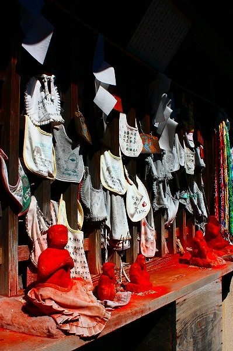

鴻巣市の三ツ木神社に
不思議な猿がいると聞いてきた。
中仙道から少し入った住宅街の中にその神社はある。
いかにもローカルな、こじんまりした雰囲気の神社だ。
門と社務所が合体したような不思議な建物を抜けると正面に拝殿がある。
その拝殿の賽銭箱の脇に何やら真っ赤なモノが…
コレが猿であった。
2体の猿の石像が朱の粉をかけられていたのである。
何だ！この真っ赤な猿！こんなの見たことないぞ！
この神社は
大山咋命を祭神としており、その眷属が猿、というわけ。
なので猿をこのようにフィーチャリングしているのだ。
眷属だけにちゃあんと合掌しているトコロがいじましいではないか。
この神社、江戸時代から
婦人病に霊験ありとされており、申の日には婦人病に悩む女性が多く訪れたとか。
今では婦人病だけではなく
安産や子授けを願う人も訪れるそうな。
そんな参拝者が訪れるのがこちら。
眷属殿である。
主神である大山咋命に遠慮していた拝殿と違って、こちらはお猿さんがメインを張っている社殿だけに願い事も
スパーク状態！
格子には
願い事が書かれたよだれかけが数多く 奉納されていた。
さらにその下にはマッカッカなお猿さん軍団が！
もう、うっとりするほどマッカッカ。

朱粉が周囲に飛び散り収拾がつかなくなっている。
テレビのリモコンを机の角にキッチリ置かないと気が済まないような几帳面な方には許しがたい光景かもしれないが、この飛び散りっぷりも含めて信仰の真の姿と心得ていただきたい。
猿の造型は様々だ。彫塑の技量を鑑みるに恐らく奉納者自身が彫刻したのではなかろうか。
二体ペアになったものもある。
さらに格子の中には…
うおっ！
数え切れないほどのモンキーたちがひしめいているじゃないか！
ウッキッキー！
6000体以上の猿の石像である。
一体一体カタチは違うが、どれも
股に朱が塗られているのが特徴。
しかも股間をよく見れば…
全部メス猿ですな。
内部には何ぞの厨子のようなものがあるが中身は不明。
その厨子も大量の猿の上に乗っかっちゃっている。
あまりの量に圧倒されまくり。中には猿なのか人なのかよく判らない石像も混ざっている。
どうしても
ワールドウォーＺとか
会田誠の作品とかを連想しちゃいますねー。
てっぺんにはまるで猿山の大将のごとく座って周囲を睥睨している猿がいた。
オマエ大将気取りだが、ここがもしもＵＦＯキャッチャーだったら真っ先に狙われるからね。！
このお猿さんは出来がいいですね。
御神木の大ケヤキ。
この洞の中にもお猿さんが置いてあった。
まるで燃えているみたい。
最早ヒンズー教のカミサマみたいになっちゃってますね。
宗教って崇高さばかりが強調されがちだが、ここの猿奉納の
ドロドロ具合ってどう？
いや、そもそも
信仰が壮大で崇高な概念という概念は後付けなのかもしれない。
何故なら大抵の信仰の根っこは人はどこから生まれどこへ行くのかという大袈裟な命題なんかじゃない。
おできが痛い、お金がない、、長男の暴力、次男のひきこもり、夫の酒乱とかそういった人間が織り成す汚泥の澱みの中から生まれてくるものだから。
だから見た目グロくて当たり前。
個人の願いの熱量が高ければ高いほどドロドロでグチョグチョな信仰風景が出現するのは当然の理なのである。
後日、別件で埼玉県立歴史と民俗の博物館に行ったらここの猿の像が展示されていた（今は展示してない）。
こんな感じ。
三ツ木神社の石猿
（鴻巣市三ツ木神社蔵）
子授け・安産・婦人病の祈願に雌猿の陰部に朱を塗って納めました
神社では薄暗いところに乱雑に積み上げられていたので良く見えなかったが、思いっきり陰部まで彫りこまれてるんですね。
で、キッチリ朱塗り。
切実な悩みだけに石を彫る人達も真剣だったんでしょうなー。